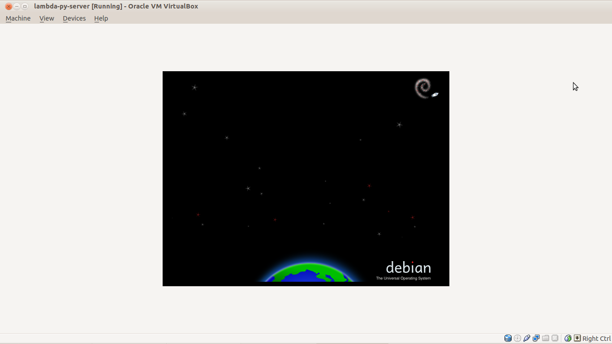
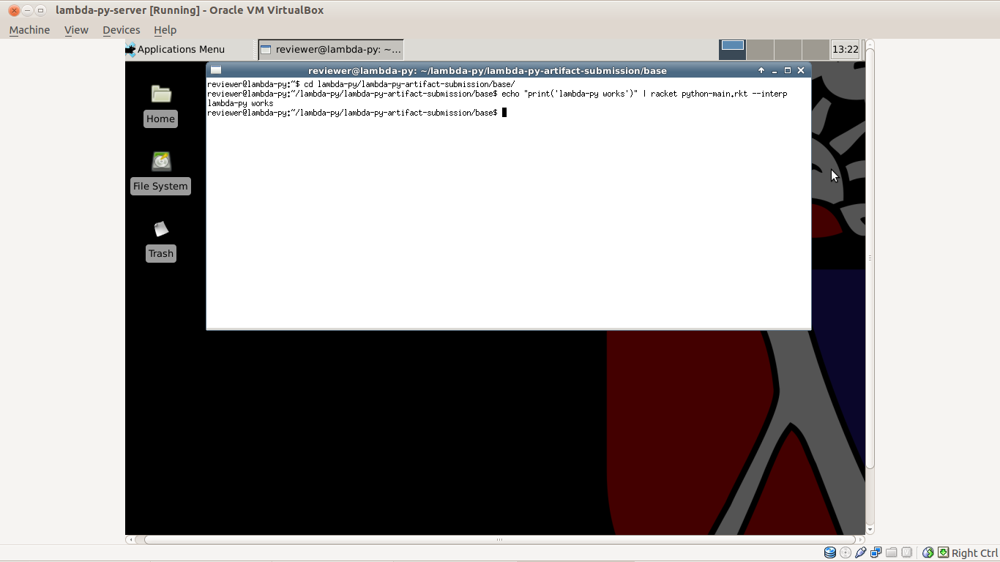

If you have any problems or questions that require consulting
the authors during the review process, email joe@cs.brown.edu
The virtual machine is in the vm directory of this archive
as lambda-py.vmdk. You can start it via VirtualBox by
creating a new virtual machine, choosing 'Linux' and 'Ubuntu' (not 64-bit).
Provide at least 1G of memory for the VM. In the first run wizard, choose
lambda-py.vmdk as the disk image to use.
It may take a few minutes to start up on a screen that looks like:
There is one useful user on the virtual
machine, reviewer, with sudo privileges and
password reviewer. When prompted for a login, enter these
credentials and you should be presented with a desktop that looks like:
The files for review are all in the directory
/home/reviewer/lambda-py. The implementation and tests for
λπ at artifact submission time are in
lambda-py-artifact-submission. We focus on the current state
of the implementation, which enjoys some significant improvements over the
implementation at submission time. It passes all the same tests as the
submission-time version and more (we include the version from submission
time with instructions (at the end of this document) for completeness).
Our first goal should be to simply verify that lambda-py runs. Open a terminal ("Applications Menu" at the top left, then "Terminal Emulator"), and let's first run a very small test so we can find out if anything goes wrong right away (if you have the opportunity to ask the authors for help, we're putting this here for quick diagnosis):
$ cd lambda-py/lambda-py-artifact-submission/base
$ echo "print('lambda-py works')" | racket python-main.rkt --interp
lambda-py works

This will take a few seconds to run, and confirms that the λπ interpreter is up and running for you.
To run all the tests that we report in the paper, you can run:
$ cd ~/lambda-py/lambda-py-artifact-submission/base
$ racket python-main.rkt --test ../../lambda-py-oopsla2013/tests/python-reference/
175 tests succeeded
0 tests failed
This runs the tests that we report in the paper using the current implementation. We expect this to take from one to two hours, depending on your machine.
We've added new features since submission time, documented in
CHANGES.txt. The new test cases are alongside the old in the
tests/python-reference subdirectory of
lambda-py-artifact-submission. So if you run the following,
you will see the additional tests passing:
$ cd ~/lambda-py/lambda-py-artifact-submission/base
$ racket python-main.rkt --test ../tests/python-reference/
[FILL] tests succeeded
0 tests failed
We provide a script called line_count.sh that uses CLOC to count the lines of code in
each directory of python-reference. This compares the current
state of the repository to the numbers reported in the paper in Figure 12
(the "Built-in Datatypes" count is the combination of the directories
function, bool, builtin, tuple, lists, and dict, "Iteration" is the
combination of directories iter and range, and "(Multiple) Inheritance" is
the combination of directories super and multiple-inheritance). So, you
can do:
$ cd ~/lambda-py/lambda-py-artifact-submission/tests
$ ./line_count.sh
... line counts output here ...
The repository is also set up to run all the same tests using Python. We've included an installation of Python 3.2.3 (the version we are modelling) in the VM, and these tests can be run with:
$ cd ~/lambda-py/lambda-py-artifact-submission/base
$ racket python-main.rkt --python-path ~/install-stuff/Python-3.2.3/python --test-py ../tests/python-reference
Note: We drive the Python tester with Racket, passing the Python path as an argument. The implementation of our test harness performs the same directory traversal as when running with λπ, but runs with the Python executable, and checks standard out and standard error the same way.
That's enough to verify the test results reported in the paper, and some of what we've worked on since then.
Many of the discussions in the paper directly correspond to a few places in the code; it is useful to see how they translate. These are presented as links to Github sources, since they have a nice viewer for the files.
redex/ directory contains a number of tests for these.
python-core-syntax.rkt,
which is simply an encoding in Racket structs of the AST from
lambda-py-core.rkt. Similarly,
python-interp.rkt is a (much) more efficient
implementation of the reduction relation from
lambda-py-reduction.rkt.
python-desugar.rkt.
python-phase1.rkt,
which marks global variables and instance variables from classes and
rewrites class bodies, and python-phase2.rkt,
which desugars all identifiers down to either local or global variables.
These do other less fundamental work that doesn't appear in the paper for
straightforward desugarings of default arguments and decorators.python-cps.rkt
base/pylib/ directory. For example
the object and type base classes implement a
large swath of built-in functionality; they are implemented in Python
with macros for primitive operators, at type.py
and object.py.
As noted in the paper, λπ isn't quite to the point of running
Python's full unittest library, so these tests use a limited
language of assertions. For example, if we look at
tests/python-reference/multiple-inheritance/methods.py, we see
lines like:
___assertEqual(Foo.getx(foo), 1)
The implementation of ___assertEqual is Python code that
simply checks that the arguments are equal according to Python's
== operator, and its implementation is in
base/py-prelude.py.
It's easy to tweak the Python-implemented libraries of λπ to see
what their effects are on Python programs. Since these libraries implement
so much built-in behavior, tweaking them can have interesting effects. You
can run individual Python programs through λπ by passing them
through standard input and using the --interp option:
$ racket python-main.rkt --interp < some-python-file.py
Some things you might try:
__str__ method in
pylib/dict.py and run a simple program like print({'x':5}).
__getitem__ method on a
built-in type like pylib/list or pylib/dict and
see the effects on lookup statements like print([1,2,3][0]).
Similarly, change __add__ or __sub__ and see
the effect on + and - expressions.__getattribute__
functions in pylib/object.py and see how it affects simple
attribute lookup
These instructions are included so reviewers can see the build process for λπ on their own machines. Reviewers should be able to evaluate the artifact's adequacy relative to the paper from the VM, but a manual installation hopefully demonstrates that the artifact is easy to install and extend.
The code for λπ is available at https://github.com/brownplt/lambda-py.
We have two points in the repository's history that are interesting for
this review: One at the time of our OOPSLA submission (28 March, 2013), and
one at the time of our artifact submission (1 June 2013). The former is
tagged in the repository as oopsla2013, and the latter is the
HEAD of the artifactevaluation branch (we'll push
minor bugfixes here if any come up in the evaluation process, it contains
this index file which isn't on the master branch, and if we do work and
change master during the review process, we won't make breaking changes for
the reviewers).
Both require that you install Racket; the main download link at http://racket-lang.org/download/
has installers for many platforms. We have tested on several different
Ubuntus from 11.04 to 12.10, and on OSX, with both Racket 5.3.3 and Racket
5.3.4. For review, we recommend Racket 5.3.4. Download the installer and
run it; you can pick any of the options for installing Racket (for example,
you can install UNIX-style in /usr/, or keep the installation
in your home directory). In the instructions that follow, we assume that
the $PATH environment variable is pointing to the
bin/ directory of the Racket installation that holds the
raco and racket commands (this may be done for
you automatically depending on which options you choose in the Racket
installer).
Example:
$ wget http://download.racket-lang.org/installers/5.3.4/racket/racket-5.3.4-bin-i386-linux-ubuntu-karmic.sh
$ sh racket-5.3.4-bin-i386-linux-ubuntu-karmic.sh
Github is the easiest way to get a copy of the code:
$ git clone https://github.com/brownplt/lambda-py
BE AWARE: If you fork the repository on Github, it will leak your
identity to us (it's up to you if that's a problem). Just using git
clone (as above) won't.
Check out the artifactevaluation branch:
$ git checkout artifactevaluation
PLAI-Typed: λπ is built in a language that sits on
top of Racket called plai-typed. We have it included with the repository
as plai-typed-18Feb2013.plt in the root of the repository. To
install it, use the raco command:
$ raco setup -A plai-typed-18Feb2013.plt
Ragg:
Since publication, we had a third-party contribution of a pure Racket parser for Python (see this merge). It uses the Ragg parser package for Racket; to install it, use theraco command:
$ raco setup -A ragg-mangled.plt
Building: The implementation of λπ is in the
base/ directory. To build, simply use make:
$ cd base
$ make
Running Use the same commands as above to run the tests (e.g.
the commands with the --test option).
We recommend using the provided virtual machine to review the code as it was at submission time, since it involves additional build steps that we have since made much easier.
At the time of submission, we used Python's parser to get original ASTs
for desugaring (we have since switched to a pure-Racket Python parser).
So, to run tests at the oopsla2013 tag, you will also need to
install Python3 (source is available at http://www.python.org/download/releases/3.2.3/).
Example:
$ wget http://www.python.org/ftp/python/3.2.3/Python-3.2.3.tgz
$ tar xzf Python-3.2.3.tgz
$ cd Python-3.2.3
$ ./configure
$ make
To view the code as it was at submission time, check out the oopsla2013 tag:
$ git checkout oopsla2013
PLAI-Typed: As in the instructions for the current build, install plai-typed with:
$ raco setup -A plai-typed-18Feb2013.plt
Running: To run the tests that were reported in the paper, run:
# One additional build step:
$ cd base/
$ raco make python-main.rkt
$ racket python-main.rkt --python-path ~/install-stuff/Python-3.2.3/python --test ../tests/python-reference/
175 tests succeeded
0 tests failed
Where ~/install-stuff/Python-3.2.3/python is the path to
your Python3 installation's python binary. We originally used
Python to get the original Python AST for desugaring, and it has since been
replaced. If not building from scratch, in the
lambda-py-28-march-2013 directory of the VM, running the same
command will run the tests on the implementation as it appeared at
submission time.